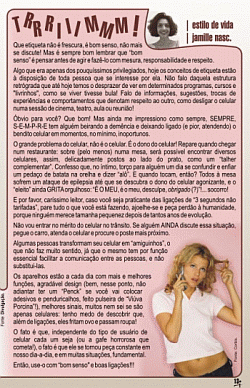

Que etiqueta não é frescura, é bom senso, não mais se discute! Mas é sempre bom lembrar que “bom senso” é pensar antes de agir e fazê-lo com mesura, responsabilidade e respeito.
Algo que era apenas dos pouquíssimos privilegiados, hoje os conceitos de etiqueta estão à disposição de toda pessoa que se interesse por ela. Não falo daquela estrutura retrógrada que até hoje temos o desprazer de ver em determinados programas, cursos e "livrinhos", como se viver tivesse bula! Falo de informações, sugestões, trocas de experiências e comportamentos que denotam respeito ao outro, como desligar o celular numa sessão de cinema, teatro, aula ou reunião!
Óbvio para você? Que bom! Mas ainda me impressiono como sempre, SEMPRE, S-E-M-P-R-E tem alguém beirando a demência e deixando ligado (e pior, atendendo) o bendito celular em momentos, no mínimo, inoportunos.
O grande problema do celular, não é o celular. É o dono do celular! Repare quando chegar num restaurante: sobre (pelo menos) numa mesa, será possível encontrar diversos celulares, assim, delicadamente postos ao lado do prato, como um “talher complementar”.
Confesso que, no íntimo, torço para alguém um dia se confundir e enfiar um pedaço de batata na orelha e dizer “alô”. E quando tocam, então? Todos à mesa sofrem um ataque de epilepsia até que se descubra o dono do celular agonizante, e o “eleito” ainda GRITA orgulhoso: “É O MEU, é o meu, desculpe, obrigado (?)”!... socorro!
E por favor, caríssimo leitor, caso você seja praticante das ligações de “3 segundos não tarifadas”, pare tudo o que você está fazendo, ajoelhe-se e peça perdão à humanidade, porque ninguém merece tamanha pequenez depois de tantos anos de evolução.
 Não vou entrar no mérito do celular no trânsito. Se alguém AINDA discute essa situação, pegue o carro, atenda o celular e procure o poste mais próximo.
Não vou entrar no mérito do celular no trânsito. Se alguém AINDA discute essa situação, pegue o carro, atenda o celular e procure o poste mais próximo.
Algumas pessoas transformam seu celular em “amiguinhos”, o que não faz muito sentido, já que o mesmo tem por função essencial facilitar a comunicação entre as pessoas, e não substitui-las.
Os aparelhos estão a cada dia com mais e melhores funções, agradável design (bem, nesse ponto, não adiantar ter um “Penck” se você vai colocar adesivos e penduricalhos, feito pulseira de “Viúva Porcina”!), melhores sinais, muitos nem sei se são apenas celulares: tenho medo de descobrir que, além de ligações, eles fritam ovo e passam roupa!
O fato é que, independente do tipo de usuário de celular cada um seja (ou a gafe horrorosa que cometa!), o fato é que ele se tornou peça constante em nosso dia-a-dia, e em muitas situações, fundamental. Então, use-o com “bom senso" e boas ligações!!!!